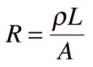

Resistivity Calculation
The electrical resistance of a wire would be expected to be greater for a longer wire, less for a wire of larger cross sectional area, and would be expected to depend upon the material out of which the wire is made (resistivity). Experimentally, the dependence upon these properties is a straightforward one for a wide range of conditions, and the resistance of a wire can be expressed as

Resistance = resistivity x length/area
Enter data and then click on the quantity you wish to calculate in the active formula above. Unspecified parameters will default to values typical of 10 meters of #12 copper wire. Upon changes, the values will not be forced to be consistent until you click on the quantity you wish to calculate.
Commonly used U.S. wire gauges
for copper wire. |
| AWG | Diameter
(inches) | Typical use |
| 10 | 0.1019 | Electric range |
| 12 | 0.0808 | Household circuit |
| 14 | 0.0640 | Switch leads |
|
|
|
Resistivities of some metals
in ohm-m(x 10-8) at 20°C. |
| Aluminum | 2.65 | Gold | 2.24 |
| Copper | 1.724 | Silver | 1.59 |
| Iron | 9.71 | Platinum | 10.6 |
| Nichrome | 100 | Tungsten | 5.65 |
|
|
|
The factor in the resistance which takes into account the nature of the material is the resistivity . Although it is temperature dependent, it can be used at a given temperature to calculate the resistance of a wire of given geometry.
|